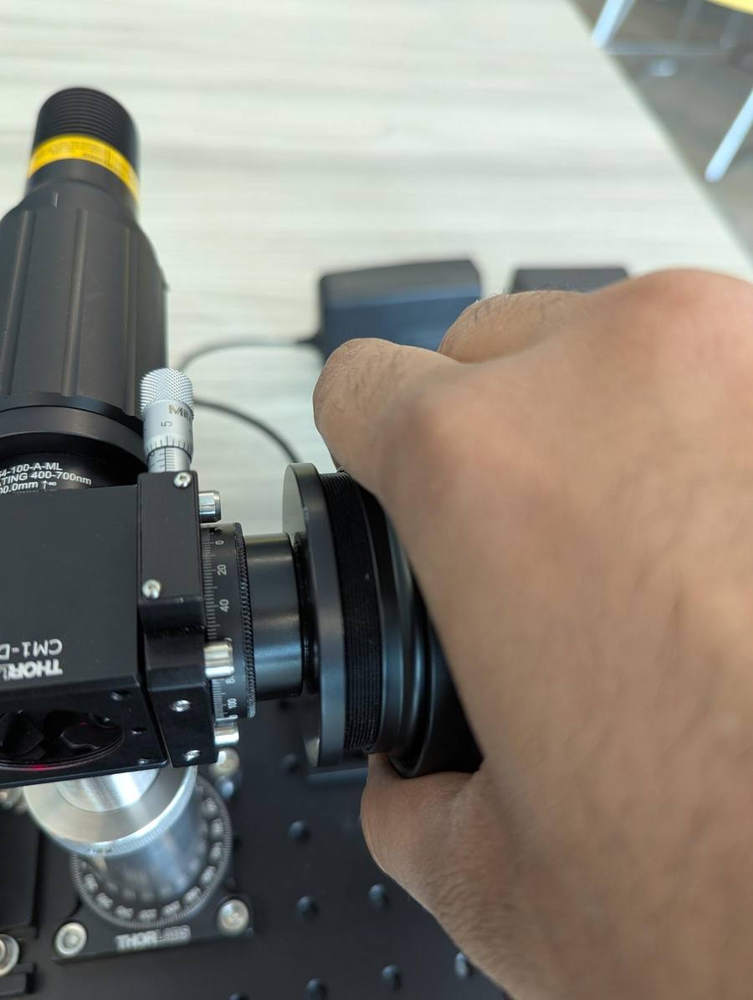
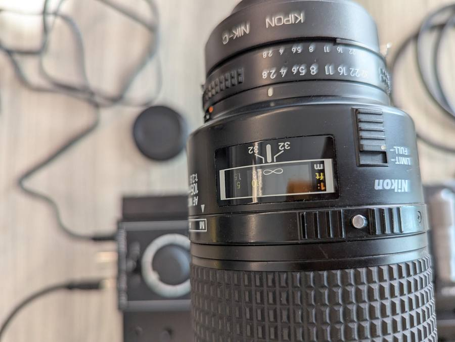
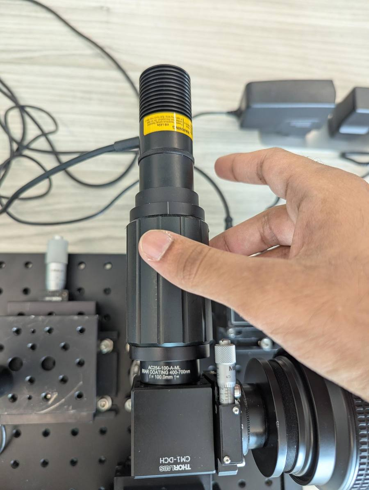
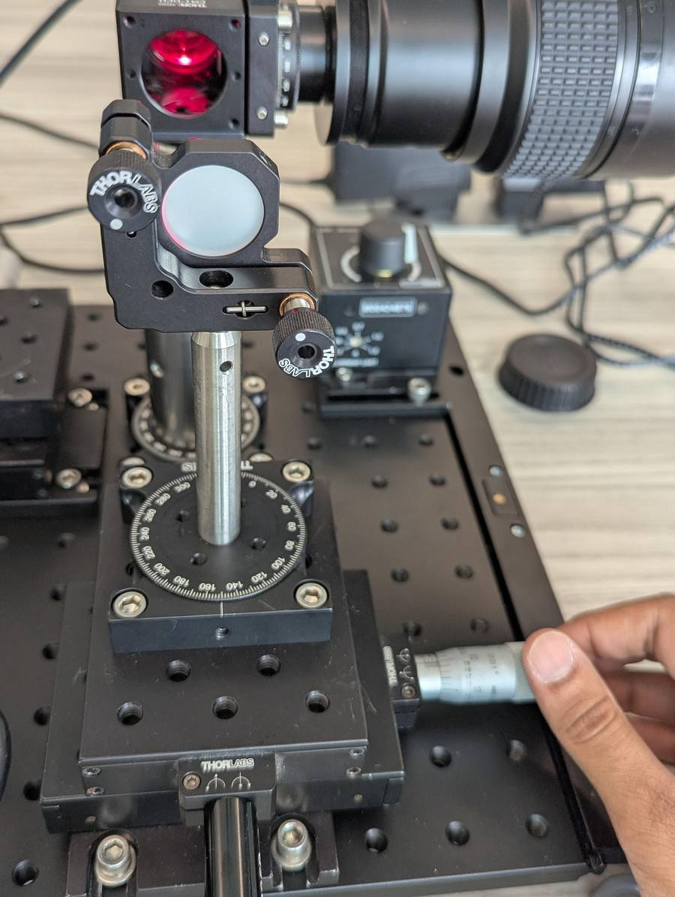

ICCP 2026 Summer School
Interferometric Imaging
Build a Michelson-style interferometer on a breadboard, align it to see white-light interference fringes, and use it as a time-domain OCT scanner to recover a depth map of a coin.
Construction
1Start with the breadboard
Your breadboard should look something like this — the LED driver (red box) and the LED mount are already in place:

2Mount the beamsplitter post
Mount the main post with the beamsplitter (BS) using the cap screws at the designated location on the breadboard. Make sure it is oriented correctly.


3Light source arm
- Screw on the 100 mm Thorlabs lens (AC254-100-A-ML).


- Screw on the LED with the telescoping tube onto the threading of the lens.

- Connect the LED to the LED driver, and try powering it up with the power adapter.


4Camera arm
- Screw the 105 mm (or 200 mm) Nikon lens on the threading at the right end of the BS cube.

- You should have a C-mount camera that looks like this:

- Screw the C-mount camera onto the F-C mount, and then attach it to the back of the lens.


 Careful: don't expose the bare sensor while handling the camera.
Careful: don't expose the bare sensor while handling the camera.
5Reference arm
- Place the XY stage (with the motorized Z825B actuator inserted) at the designated location on
the breadboard and secure it using washers and cap screws.


- Careful not to touch or damage the mirror — screw the round mirror mount onto the
stage using the set screw at the bottom.


- Connect the end of the Z825B motor to the KDC101 K-cube motor controller (red cube).


6Object arm
- Similar to the reference arm, place and secure the XY translation stage for the object side
at the designated location.


- Drop in the post holding the rectangular mirror, careful not to touch or damage the
mirror.


- Use the lateral micro-adjusters to position the mirrors to be facing directly opposite
the cage-cube opening.


7Fix the base rotation stage
Fix the orientation of the base rotation stage at the centre (ask for a 5/64 hex key) such that the LED and camera are roughly along the breadboard holes.


Alignment
Everything in this part runs from the Python scripts in this repository, inside the
conda environment from environment.yml.
1Hardware sanity check
Before touching any optics, make sure the laptop can actually talk to the stage and the camera. Plug in the KDC101's USB cable, switch it on with the red switch, connect the camera's USB cable, then run:
# one-time setup (see Software installations below for details)
./setup.sh
conda activate iccp-oct # or: source .venv/bin/activate
# verify stage + camera connectivity
python test_hardware.pyOr, to skip a vendor you don't have: python test_hardware.py --camera ids (IDS only —
skips the Vimba X check) or --camera avt (Allied Vision only).
The stage test connects, reads the position, moves +5 mm and back, and verifies
the readback — so make sure the stage has 5 mm of clearance before you run it. The camera test
connects, grabs a frame, buffers three more, and writes a small stack to test_captures/.
What passing looks like — each step prints a checkmark as it succeeds; a healthy run looks like this:
TEST: Stage (Thorlabs KDC101)
✓ Imported ThorlabsStage
✓ Connected to stage
✓ Read initial position: 0.000 mm
✓ Moved to 5.000 mm
✓ Position verified: 5.000 mm (error: 0.001 mm)
✓ Moved back to initial position
✓✓✓ Stage test PASSED
TEST: Camera (IDS)
✓ Connected to camera
✓ Captured frame: shape=(2076, 3088), dtype=uint16
✓ Captured 3 frames to buffer
✓ Saved stack: test_captures/test_stack.npy (36.6 MB)
✓✓✓ Camera test PASSED
SUMMARY
Stage: ✓ PASS
Camera: ✓ PASSThings to check in that output beyond the checkmarks:
- Position error should be well under 0.1 mm — a ⚠ position-mismatch warning means the stage moved but the readback disagrees (loose coupling, wrong stage model, or motion not finished).
- Frame shape and dtype should match your sensor — full resolution, and
uint16if the camera runs a 10/12-bit mode (IDS) rather than 8-bit. - The saved stack size should be plausible (a few frames × resolution × 1–2 bytes).
The exit code is a bitfield — 0 all good, 1 stage failed, 2
camera failed, 3 both — handy if you're scripting.
libusb must be installed). If a script crashed earlier, the hardware may still be held
by its Python kernel — restart the kernel and retry. A camera failure is usually a missing vendor SDK;
the script prints exactly which package to install (e.g. the vmbpy wheel from
Vimba X).2Getting light into the camera
- Ensure the lens aperture is fully open.

- Launch the visualizer — everything in the rest of this part happens inside it. It auto-detects
the camera (AVT or IDS), connects to the stage, and homes it on startup:
# live camera preview + coherence panel # --step: coarse stage step in mm; --window-mm: positional window for the DC mean python visualizer.py --step 0.01 --window-mm 0.2Stage control: the reference stage is driven from the keyboard — w/s jog by the coarse step (hold to sweep), e/d by the fine step (coarse ÷ 10), and [/] change the step size. The status bar along the bottom shows exposure, frame rate, the current stage position, and the step sizes. - Adjust your camera to be roughly upright by rotating it about the rotation mount with graduations.

- Switch on the LED, and try to coarsely align the orientation of the mirrors to get maximum light
into the camera by:
- coarsely adjusting the mirror post mounts,
- using the mirror adjuster knobs.
You should see two ‘blobs’ — (likely blurred) images of the LED — that move as you adjust the mirrors.

The visualizer with the two (blurred) images of the LED in the live view — coherence panel still empty on the right. Note: You may need to lower the LED power and reduce your exposure. Adjust exposure live with the +/- keys in the visualizer, or relaunch with--exposure <µs>.
3Collimating the LED
- Set the lens to infinity focusing.

- Adjust the telescoping tube until the images of the active element of the LED (this may look
different for each LED) look as sharp as possible.
Note: if you have the SM1NR1 telescoping tube, the LED should not rotate as you adjust it — only the tube extends. Some of the lens tubes (SM1U) do rotate as you turn them, so don't be alarmed if the LED spins with the adjustment on those.

videoCollimating: the two images of the LED's active element sharpen up as the telescoping tube is adjusted. Tip: You may choose to block one of the arms using a piece of card to make alignment easier.
4Aligning the mirrors
Use the adjusters on the mirror mounts to position both images of the LED roughly at the center of the field of view of the camera.
OCT
With the interferometer aligned, use it as a time-domain OCT scanner: match the pathlengths of the two arms, measure the coherence length (your depth resolution), then scan an object and reconstruct its depth map.
1Coarse pathlength matching
- Block the object side using a piece of card. Change the lens focusing such that the reference
mirror comes into focus (about 1:1).
Tip: Laterally translate the mirror using the micro-adjusters until you see the edge of the mirror, so it is easy to see if it comes into focus. You may also use dust or scratches present on the mirror.

videoBringing the mirror surface into focus — watch the dust and scratches on the glass sharpen up. You will need to increase the exposure time and/or LED power.
- Unblock the object arm and select a patch on the live view — two clicks: the
first anchors a corner, the second finalizes it. The coherence panel now tracks that patch.
What the panel is computing
The plotted value is the
computeMeanDiffmeasure: within the patch, take each frame's absolute deviation from the local (running) mean intensity, and average it — mean |I − DC|. The DC mean is the plain image; what's left is the amplitude of the interference fringes. That amplitude is essentially zero everywhere except when the two arms' pathlengths match to within the coherence length — so as you step the stage, the plot sits at a noise floor and then jumps in a sharp peak at the matched position. (Step 4 uses this same measure per-pixel to build the depth map.) - Step through stage positions with w/s, using a step that is neither too
small nor too large — around 0.01–0.02 mm. Too small and the sweep takes forever; too large and
you can step clean over the peak, which is only a coherence length (tens of µm) wide. The moment the
pathlengths match you will see the fringes appear in the live view, and a sharp peak
in the panel.
videoStepping the stage with a patch selected: the plot sits at the noise floor until the pathlengths match — then fringes appear and the amplitude spikes into a sharp peak.
2Fine pathlength matching
Move the mirror back to just before the peak you found (zoom into the plot around it with the mouse wheel if it helps), then decrease the step size with [ and step through the peak with the fine keys e/d. At the top of the peak you should see bright interference fringes across the camera view.
You can use the mirror-orientation adjusters to change the interference fringe pattern:
3Measuring temporal coherence length
With a patch selected in visualizer.py, do a finer sweep, as demonstrated in the video
in step 1: move to just before the peak, drop the step size with [, and then
step through the peak with the fine keys e/d (steps of 3–5 µm over a range of
about 200–300 µm) — to refine this position such that you get maximum contrast. Once the envelope
crosses half-max on both sides of the peak, the panel reports the coherence FWHM and the
peak position directly in the stat tiles. This temporal coherence length of the
spectrally filtered light reaching the camera should be our depth resolution for OCT.

What should we expect?
The coherence length is set by the spectrum of the light: the wider the bandwidth, the faster the two arms decorrelate as their pathlengths separate. In terms of the frequency bandwidth Δf — or, more usefully here, the central wavelength λ and wavelength bandwidth Δλ —
L = cn Δf ≈ λ2n Δλ
with n = 1 in air. [Placeholder — update with your LED + filter] For our LED behind the 10 nm bandpass filter (λ ≈ 660 nm, Δλ ≈ 10 nm) this gives L ≈ (660 nm)² / 10 nm ≈ 44 µm. For a Gaussian spectrum the exact FWHM-to-FWHM relation carries an extra factor of 2 ln 2/π ≈ 0.44, i.e. L ≈ 19 µm — so a measured envelope FWHM of a few tens of microns (here ≈ 28 µm) is right where it should be. Without the filter, the LED's full ~25 nm bandwidth would cut this roughly in half.
4Scanning a coin
- When you're ready, ask for help to remove the rectangular mirror from the mirror
mount. You can then replace it with a coin (quarter/euro/…).

- Insert the 0.6 OD ND filter (placed at a slight angle to avoid inter-reflections) in the light
path to roughly match intensities from both arms. (You will need to readjust your exposure time.)

- (Optional) You may readjust your focus depending on the object surface position. You may also reduce your aperture size to increase your depth of field.
- In
visualizer.py, select a small patch on the coin (two clicks), and sweep the stage with w/s once again, over a length comparable to the error due to the difference in thickness of the coin and the mirror (1–2 mm). The peak in the coherence panel gives you a ‘center’ position around which we will perform the scan.videoPathlength matching on the coin — this is an example of how things will look when you find the right spot: the patch amplitude spikes in the coherence panel as the stage crosses the coin's surface. - Quit the visualizer, then perform a scan over a length of ~1 mm with
oct_scan.py. Use the temporal coherence length determined in step 3 to choose the step size — a few steps per FWHM, e.g. ~28 µm coherence → 5–10 µm steps. The captured stack may take a while to save. For the example below we used a 0.9 mm range with 3 µm steps, starting just below the peak found above:# 300 frames x 0.003 mm = 0.9 mm, starting just below the peak python oct_scan.py --start 12.0 --step-mm 0.003 --frames 300This saves a timestamped
stack_*.npyplus a*_meta.jsonsidecar with the scan geometry intooct_scans/.Caution:oct_scan.pysaves the stack as a.npythat is several GB in size (full resolution × hundreds of frames) — make sure you have disk space for it before starting the scan. - Run
oct_process.pyto recover a depth map from the scanned stack (it computes the mean-diff interference amplitude at every pixel and takes the depth of maximum contrast):python oct_process.py --stack oct_scans/stack_<timestamp>.npyTip: if you saved the stack at the original size and find the processing too slow, you can spatially downsample:python oct_process.py --stack oct_scans/stack_<timestamp>.npy -n 2 # -n 2 spatially downsamples 2x2 — purely to make the computation fasterIt saves
*_depth.npy,*_maxamp.npy, and a rendered*_render.png. To re-render with different color limits later, edit the settings at the top ofoct_view.pyand run it. A successful scan looks like this:
Depth map from a well-centred scan — the coin's relief is cleanly resolved over a smooth tilt gradient. (This coin is from another experiment, so it won't match the one in the photos above.) Caution: if your depth map looks like either of the ones below, part of the surface fell outside the scanned range — pixels clip at the first/last frame (flat saturated patches) or never see a peak at all (salt-and-pepper noise). Re-run the scan with a longer range and/or a better-centred start position.

What is computeMeanDiff doing?
Think of the stack one pixel at a time: as the reference stage sweeps, each pixel's intensity I(x, y, z) is a slowly-varying DC background (the plain image of the coin) plus an interference term. The interference term is only appreciable while the reference pathlength matches that pixel's surface depth to within the coherence length — exactly the envelope you swept through in step 3, now happening at a different z for every pixel depending on the local height of the coin.
compute_mean_diffextracts that envelope:- Estimate the DC background — a running temporal mean over a ~20-frame window at each pixel (frames far from the envelope average the fringes away).
- Take the interference amplitude — |I − DC|, then average over a small spatial patch (~5 px) to smooth out fringe phase and noise. This is the same patch-amplitude measure the visualizer plots live.
- Find the peak — per pixel, the depth map is the argmax of the envelope
along z (in frame indices; × step size for mm), and
maxampis the peak height — a confidence measure.
The coherence length from step 3 shows up twice here: it is the width of the per-pixel envelope, so it sets both the depth resolution of the final map and the largest scan step you can get away with (a few frames per FWHM, or the peak slips between samples). Pixels that never interfere — steep slopes or absorbing spots that return no light — have a noise-only envelope, so their argmax is random: that's the speckly background outside the coin in the depth map, which you can mask using
maxamp.
5Scanning other objects
Replace the coin with another object (or coin) of your choice and try doing the same!
depth_to_pointcloud.py converts a depth map
(plus its metadata sidecars) into a 3D point cloud you can inspect interactively.Software installations
The rig is a Thorlabs KDC101-driven motorized stage plus a monochrome machine-vision camera — either Allied Vision (via the Vimba X SDK) or IDS uEye (via pyueye). All the software runs from one Python environment, and one script builds it on Windows (Git Bash) and macOS.
ThorlabsStage /
Camera), and troubleshooting.Running setup.sh — the script prefers conda if you have it and falls back to a
plain .venv if you don't:
chmod +x setup.sh
./setup.sh
# or, to force a venv even when conda exists:
FORCE_VENV=1 ./setup.shIt creates or updates the iccp-oct environment from environment.yml
(Python 3.12, numpy, scipy, matplotlib, OpenCV, pyserial, pylablib, pyftdi), registers a Jupyter
kernel, and prints activation instructions when it finishes:
# conda path
conda activate iccp-oct
# venv path
source .venv/bin/activate # Windows: .venv\Scripts\activateIn VSCode, pick the interpreter with Ctrl/Cmd+Shift+P →
Python: Select Interpreter → Python (iccp-oct) (or ./.venv). Some scripts
can also be run cell-by-cell in the Interactive Window, so it's worth setting this up now.
After the environment, install the SDK for your camera — one of the next two applies, not both.
Allied Vision cameras: the vmbpy wheel — vmbpy is not on PyPI;
it ships as a wheel inside the Vimba X SDK. setup.sh searches the standard install
locations and installs the wheel automatically if it finds one; otherwise install
Vimba X
first, then re-run setup.sh (or pip install the wheel directly):
- Windows:
VimbaX_Setup-2026-1-Win64.exe— wheel inC:\Program Files\Allied Vision\Vimba X\api\python\ - macOS:
VimbaX_Setup-2023-4-macOS.dmg— wheel in/Users/Shared/Allied Vision/Vimba X/Vmbpy/
iccp-oct or the venv first, then pip install
<path-to-vmbpy-*.whl>) — not into the system Python, or imports will fail when you run
from the project env.IDS cameras: pyueye — IDS uEye cameras need two pieces:
- The IDS Software Suite (the uEye SDK and driver) from
ids-imaging.com — this is the native driver the Python
bindings talk to. Without it,
pyueyeimports but every call fails. - The Python bindings:
pip install pyueyeinto the project environment.
That's it — no wheel hunting. If you're on IDS hardware you can skip Vimba X entirely; pass
--camera ids to the hardware test so it doesn't check for vmbpy.
Platform notes (already handled by setup.sh):
- macOS: Apple's FTDI driver ignores the KDC101's custom PID
(
0xfaf0), so no/dev/cu.usbserial-*port ever appears. Don't hunt for one — the stage is driven directly over libusb viapyftdi.setup.shinstallslibusb(conda-forge or Homebrew) for you. - Windows: the Thorlabs Kinesis/APT driver must be installed for the stage. (Optional) Thorlabs Kinesis also works as a GUI fallback for debugging.